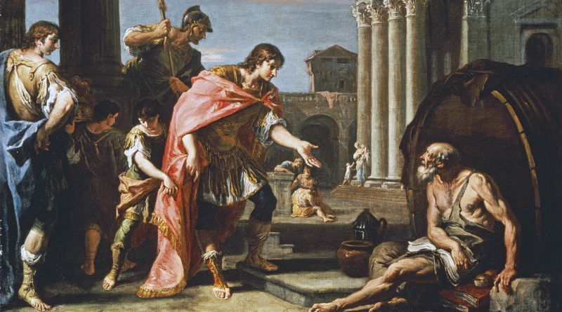
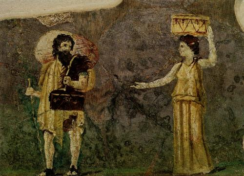
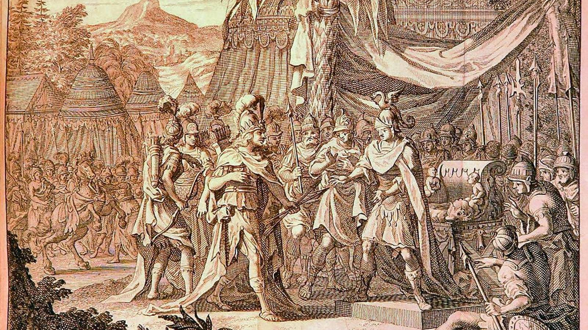

Cínicos
Otros fiósofos cínicos
Aparte de Antístenes y de Diógenes, son conocidos otros filósofos cínicos como Crates de Tebas, Metrocles e Hiparquia de Marinea y Onesícrito de Astipalea, entre los principales. También hay otros cínicos menos conocidos, y finalmente exponemos, solo en números, el catálogo integral de cínicos de M.-O-Goulet-Cazé.
Crates de Tebas

Crates era un ciudadano adinerado y de buena posición social, que renunció a toda su fortuna para hacerse filósofo cínico. Fue discípulo de Diógenes y maestro de Zenón de Citio, el que luego fundara una de las escuelas más importantes de la filosofía antigua, el estoicismo. Crates, a diferencia de su maestro, era un hombre amable y tranquilo, que le valió el sobrenombre de "el filántropo", así como el de "abrepuertas" porque la gente le llamaba a sus casas para pedirle consejo y charlar con él.
Nació en Tebas aproximadamente en el año -368, pero enseguida se marchó a Atenas, para hacerse seguidor de Diógenes, murió hacia el año -288. Como todos los cínicos predicaba la autarquía y la sencillez dando ejemplo con su vida y sus actos, y aunque de estilo menos agresivo que sus predecesores, su actitud es la misma que los demás.
Para Crates la filosofía le libera de su esclavitud externa, en cuanto a la familia, la propiedad o las costumbres sociales y le libera también de esclavitud interna, de sus opiniones, manteniendo su radical libertad individual. Para conseguir vivir feliz, es suficiente con lo mínimo, es esencial la frugalidad y la distancia con las instituciones y las leyes.
Crates escribió bastantes obras de literatura en las que consiguió mantener un buen nivel y además las escribió casi siempre en verso, sus obras consisten en una mezcla de poemas medio broma y medio serio, y parodias que escondían mensajes éticos.
Pretendía propagar los principios de Diógenes, de una manera atractiva, y probablemente de esta manera consiguió llegar a una audiencia bastante amplia. Protagonizó uno de los escándalos mas curiosos de la filosofía antigua: su historia de amor con Hiparquia, filósofa cínica como él.
Metrocles e Hiparquia de Maronea

Fueron dos hermanos que provenían de una familia rica de Maronea. Metrocles tuvo desde muy temprano inquietudes filosóficas y gracias a que tenía bastante dinero pudo dedicarse a ello sin problemas. Fue discípulo de Teofrasto y luego también de Jenócrates.
Pero no se sintió satisfecho hasta que encontró a Crates y se hizo discípulo suyo y abandonó sus pertenencias. Fue conocido como un experto en la anécdota breve, con ánimo de memorizar y utilizar como guía.
Poco más se sabe de su vida, salvo que por su mediación, su hermana Hiparquia conoció a Crates del que se enamoró, pero al principio este amor no fue correspondido y ante esta situación le amenazó con suicidarse, al final y en contra de las normas sociales de la época mantuvieron una relación cínica, que incluía el mantenimiento de relaciones sexuales en público.
Hiparquia es una de las pocas mujeres filósofas de la antigüedad (pero no la única), y desde luego fue la única cínica. La dureza de tener que abandonar todas sus pertenencias, vestir el manto cínico, llevar una vida como la de sus compañeros y ser uno más no debió ser nada fácil, dadas las costumbres de la época. Sin embargo su relación con su Crates, parece que fue de los más cordial y compartían todo de igual a igual, incluido la filosofía.
Onesícrito de Astipalea

Su vida transcurrió aproximadamente entre los años -380 a -300. Fue otro de los discípulos importantes de Diógenes y el más viajero. Acompaño a Alejandro Magno en una expedición la India, donde entró en contacto con los gimnosofistas hindúes, a los que define como sabios o santones medio desnudos y a los que comparó con los cínicos griegos.
Su vida no fue la un auténtico cínico al estilo de sus predecesores, pero su actitud y la propagación del cinismo hizo que Diógenes Laercio le incluyera en su libro y su nombre figure en cualquier lista de cínicos.
Otros cínicos menos conocidos
Diogenes Laercio aún menciona a otros tres filósofos en la lista de cínicos y a los que trata más brevemente: Mónimo de Siracusa, que fue discípulo de Diógenes, Menipo de Gadara, discípulo de Crates, Menedemo de Lampsaco y dos más en otras partes de su libro: Bión de Boristenes (-335 a -245) que fue vendido como esclavo, y acabó en Atenas estudiando filosofía con Crates y Estilpon de Megara (-360 a -280) que pasó por la escuela cínica (es probable que fuera alumno de Diógenes) y acabó fundando su propia escuela: la megárica.
De los filósofos posteriores a Diógenes Laercio, solo destacaremos a Luciano de Samosata que fue una mezcla de cínico y de epicúreo, escribió numerosa obras, casi todas de carácter satírico, así como diálogos en algunos de los cuales intervienen filósofos cínicos.
Catálogo integral de filósofos cínicos conocidos
M.-O.Goulet-Cazé, en un excelente trabajo, ha elaborado un catálogo integral de los cínicos conocidos, con un pequeño resumen de cada uno de ellos, dispuestos en 8 grupos: 83 cínicos cuya autenticidad histórica está comprobada, 14 cínicos anónimos, 10 personas cuya vinculación con el cinismo es incierta, 31 cínicos de las pseudoepigráficas Epístolas cínicas, 13 cínicos casi con seguridad ficticios, pero que aparecen en la literatura, 1 cínico por equivocación, 4 personas que no fueron cínicas, pero a las que se conocía como perros, y por último varios títulos en los que aparece la voz perro.
<- Atrás